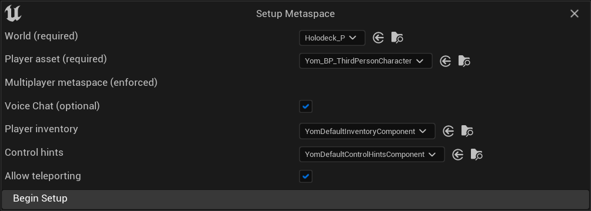

- Generated by
 1.9.5
1.9.5
|
YOM Replicator SDK 0.7.0.7
A metaverse SDK created by YOM
|
This page will explain how to build and create your metaspace.
Start your metaverse project and go to Edit -> Plugins, located at the top of your screen. Search for 'YOM' in the search bar, after which you should see a plugin for the YOM Replicator SDK system (if this is not the case, restart your editor and try again). Enable the Replicator SDK by clicking the checkbox. After that, search for GltfRuntime and VaRest and enable those plugins as well. Restart the editor such that Unreal can load plugins. After Unreal is loaded go to Settings (top right of Content Drawer) -> Show Plugin Content to display all plugin content provided by the Replicator SDK.
The YOM Replicator SDK comes with a setup screen. The setup screen can be opened by going to Tools -> Your Open Metaverse -> Setup Metaspace, this will pop up in the setup window. The window has a couple of settings that you will need to set. An explanation of the different settings is listed below:

Yom_BP_ThirdPersonCharacter.YomDefaultInventoryComponent. You can also create your own inventory in the Advanced Inventory Setup Guide.YomDefaultControlHintsComponent.YomDefaultPortal in your scene.Click Begin Setup and, if you set the settings correctly, a message should pop up in the bottom right to restart your editor then click Restart to apply the changes.
In under Content Drawer -> Content you should now see a MetaspaceGameMode and a MetaspacePlayer. These assets can be used to add further modifications and behavior to your metaspace. Please note that in the MetaspaceGameMode the Default Pawn Class is set to None, this is intended behavior as a pawn that will be loaded into the game via the MetaspacePlayer. There are also some advanced settings that can be adjusted for the players, which can be done in the Advanced Player Setup Guide guide.
Please view the Debugging your Metaspace page to set the settings to setup your metaspace for debugging. This can help a lot when you run into issues and prevents a lot of issues from happening.
Your selected character will spawn when you press the play button (if this does not happen, you should add a Player Start to the level). The character will have the inventory that you selected. The default inventory can be opened when you press 'I' and it should contain an example item which can be spawned by clicking on the item or by pressing '1' on the keyboard. This item is loaded from a test wallet and can be changed to contain different items by editing the Plugins/YourOpenMetaverse/FakeResponses/testWalletResponse.json (found in Windows explorer). Furthermore, if you set multiplayer to true you can now test multiplayer by clicking the three dots next to the play button and setting Number of players to a bigger number. Now you can start designing your own awesome metaspace. If your character stopped responding to your inputs this indicates that you had in your PlayerController or in your GameMode. To fix this you will have to copy the code over to the MetaspacePlayer and the MetaspaceGameMode, which will fix this issue.